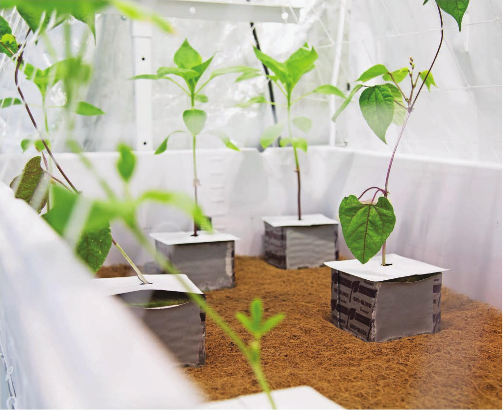

Coco root rugs create a hybrid between flood and drain and media bed systems. The root rugs allow roots to grow along the entire tray, similar to a media bed, yet the plants are kept in individual pots (or blocks) like a flood and drain. Root rugs keep the surface of the grow tray clean and reduce the potential for algae growth. The primary drawback of root rugs is the price. so irrigation frequency should be adjusted accordingly. Other popular options include perlite, peat, and stone wool. Fine-textured substrates like coco, peat, and small perlite are often best in fabric pots to avoid losing substrate from the pots' drainage holes. • Change grow bed size. Prefabricated flood and drain trays come in many sizes, generally ranging from 1 to 4 feet wide and 2 to 12 feet long. DIY grow beds can be as big or as small as you want. A grow bed can be constructed from concrete mixing trays, intermediate bulk containers (IBC totes), plastic storage totes, dish tubs, or even wood with a plastic liner (similar to the wicking bed design). Whatever is chosen, make sure the tray can be modified to include a fill fitting that is flush, or nearly flush, with the bottom of the tray and a drainage fitting that is elevated above the surface. Most flood and drain designs place the drainage fitting about one-third the height of the selected pots. HYDROPONIC GROWING SYSTEMS 101
